Why Heart Failure and Kidney Disease Travel TogetherBakit Magkasama ang Pagpalya ng Puso at Sakit sa BatoNgano nga Nag-uban ang Heart Failure ug Sakit sa KidneyBakit Magkayabe ing Pamamalya ning Pusu at Sakit king Batu
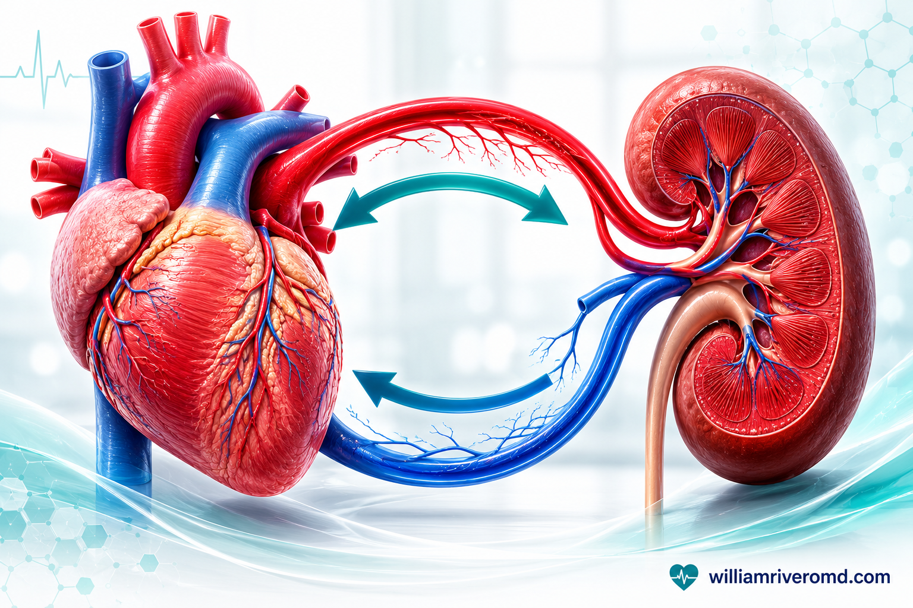
The heart and kidneys share one circulation. When one organ weakens, the other is dragged down with it — a two-way street called the cardiorenal connection.
The heart and the kidneys are partners in one plumbing system. The heart pumps blood; the kidneys filter it and manage the body's salt and water. When one fails, the other suffers — and the two diseases push each other forward in a vicious cycle. This is why so many Filipinos who are admitted for "water in the lungs" (congestion) also turn out to have kidney disease, and why so many people on dialysis ultimately die of a heart problem rather than the kidneys themselves.Magkapartner ang puso at bato sa iisang sistema ng tubo. Ang puso ang nagbobomba ng dugo; ang bato ang nagsasala nito at namamahala sa asin at tubig ng katawan. Kapag pumalya ang isa, naapektuhan ang isa — at itinutulak ng dalawang sakit ang isa't isa sa isang masamang siklo. Kaya napakaraming Pilipino na na-admit dahil sa "tubig sa baga" (congestion) ay lumalabas na may sakit din sa bato, at kaya napakaraming taong nasa dialysis ang namamatay dahil sa puso sa halip na sa bato mismo.Magkauban ang kasingkasing ug kidney sa usa ka sistema sa tubo. Ang kasingkasing nagbomba sa dugo; ang kidney nagsala niini ug nagdumala sa asin ug tubig sa lawas. Kung mapakyas ang usa, maapektuhan ang pikas — ug ang duha ka sakit nag-aghat sa usag usa sa daotang siklo. Mao kini nga daghang Pilipino nga na-admit tungod sa "tubig sa baga" (congestion) adunay sakit usab sa kidney, ug ngano nga daghang tawo sa dialysis ang namatay tungod sa kasingkasing imbes sa kidney mismo.Magkapartner ya ing pusu at batu king metung a sistema ning tubo. Ing pusu mamomba yang daya; ing batu sasalan na ini at mamahala king asin at danum ning katawan. Nung mamalya ya ing metung, maapektuan ya ing aliwa — at itutulak da ning aduang sakit ing metung at metung king marok a siklo. Kaya dakal a Pilipino a na-admit uli ning "danum king baga" (congestion) ing lalto a atin yang sakit king batu, at bakit dakal a tau king dialysis ing mate uli ning pusu imbes king batu mismo.
Just how common is the overlap?Gaano kadalas ang pagsasanib na ito?Unsa ka kasagaran kini nga pag-uban?Makananu kadalas ing pamiyabe a ini?
30–60%
of people with heart failure also have chronic kidney disease.ng mga taong may heart failure ay may CKD din.sa mga tawo nga adunay heart failure adunay CKD usab.karing taung atin heart failure atin la mu rin CKD.
10–30%
of people with chronic kidney disease also have heart failure — and the risk climbs as kidney function falls.ng mga taong may CKD ay may heart failure din — at tumataas ang panganib habang bumababa ang paggana ng bato.sa mga tawo nga adunay CKD adunay heart failure usab — ug mosaka ang risgo samtang mokunhod ang gana sa kidney.karing taung atin CKD atin la mu rin heart failure — at tataas ya ing peligru nung kumati ya ing gana ning batu.
Cardiorenal Syndrome: The Five Ways Heart and Kidney Pull Each Other DownCardiorenal Syndrome: Ang Limang Paraan na Hinihila ng Puso at Bato ang Isa't IsaCardiorenal Syndrome: Ang Lima ka Paagi nga Magbira ang Kasingkasing ug Kidney sa Usag UsaCardiorenal Syndrome: Ding Limang Paralan a Giguyud ning Pusu at Batu ing Metung at Metung
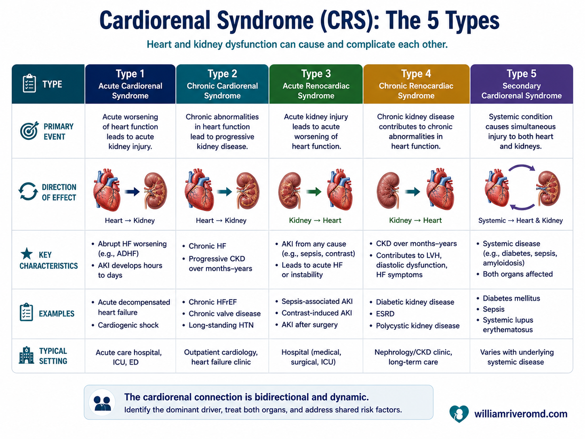
The five types of cardiorenal syndrome (Ronco classification): heart-first (types 1–2), kidney-first (types 3–4), or a systemic illness hitting both (type 5).
Cardiorenal syndrome is the medical name for what happens when trouble in the heart and trouble in the kidneys feed each other. Cardiologists classify it into five types depending on which organ failed first and whether it happened suddenly or slowly. You do not need to memorise these — but seeing them laid out makes the two-way relationship clear.Ang cardiorenal syndrome ang medikal na pangalan sa nangyayari kapag nagpapakain sa isa't isa ang problema sa puso at problema sa bato. Ina-uri ito ng mga kardiyolohista sa limang uri depende kung aling organo ang unang pumalya at kung bigla o dahan-dahan itong nangyari. Hindi mo kailangang isaulo ang mga ito — ngunit kapag nakita mong nakahanay, lumiliwanag ang dalawang-daang relasyon.Ang cardiorenal syndrome mao ang medikal nga ngalan sa mahitabo kung ang problema sa kasingkasing ug problema sa kidney magpakaon sa usag usa. Giklasipikar kini sa mga kardiyolohista ngadto sa lima ka matang depende kung asa nga organo ang unang napakyas ug kung kalit o hinay kini nahitabo. Dili nimo kinahanglan isaulo kini — apan kung makita nimo nga gihan-ay, klaro ang duha-ka-dalan nga relasyon.Ing cardiorenal syndrome ya ing medikal a lagyu na ning malyari nung mamangan king metung at metung ing problema king pusu at problema king batu. Iuri da ning mga kardiyolohista king limang uri depende nung nung nukarin a organo ing minunang mamalya at nung biglang o marimla yang melyari. Ali mu kailangan a isaulu deni — dapot nung akit mu lang misasanib, lalto ya ing aduang-dalan a relasyon.
| Type | What fails first | Plain-language example |
|---|---|---|
| Type 1 Acute cardiorenal | Heart, suddenly | A sudden heart attack or flare of heart failure causes a rapid acute kidney injury. |
| Type 2 Chronic cardiorenal | Heart, slowly | Long-standing weak heart slowly grinds kidney function down over years. |
| Type 3 Acute renocardiac | Kidney, suddenly | A sudden kidney injury (e.g. severe dehydration, blockage) overloads the heart and triggers heart failure or dangerous potassium. |
| Type 4 Chronic renocardiac | Kidney, slowly | Long-standing CKD thickens and strains the heart, raising the risk of heart attacks and heart failure. |
| Type 5 Secondary | Both, from outside | A whole-body illness (e.g. severe infection/sepsis, diabetes) damages heart and kidneys at the same time. |
Adapted from the Ronco classification of cardiorenal syndromes. In real patients the types blur together — what matters is recognising that the damage runs both ways.Hango sa Ronco classification ng cardiorenal syndromes. Sa totoong pasyente, naghahalo ang mga uri — ang mahalaga ay makilala na ang pinsala ay magkabilaan.Gikan sa Ronco classification sa cardiorenal syndromes. Sa tinuod nga pasyente, nagsagol ang mga matang — ang importante mao nga mailhan nga ang kadaot duha ka dalan.Mibat king Ronco classification da reng cardiorenal syndromes. Karing tutung pasyente, misasalu la reng uri — ing mahalaga ya ing akilala a ing pinsala magkabili-bili ya.
Shared Roots: Why Both Diseases Grow From the Same SoilMagkatulad na Ugat: Bakit Tumutubo ang Dalawang Sakit Mula sa Iisang LupaManagsama nga Gamot: Ngano nga Motubo ang Duha ka Sakit Gikan sa Usa ka YutaMikakatulad a Yamut: Bakit Tutubu la Reng Aduang Sakit Mibat king Metung a Gabun
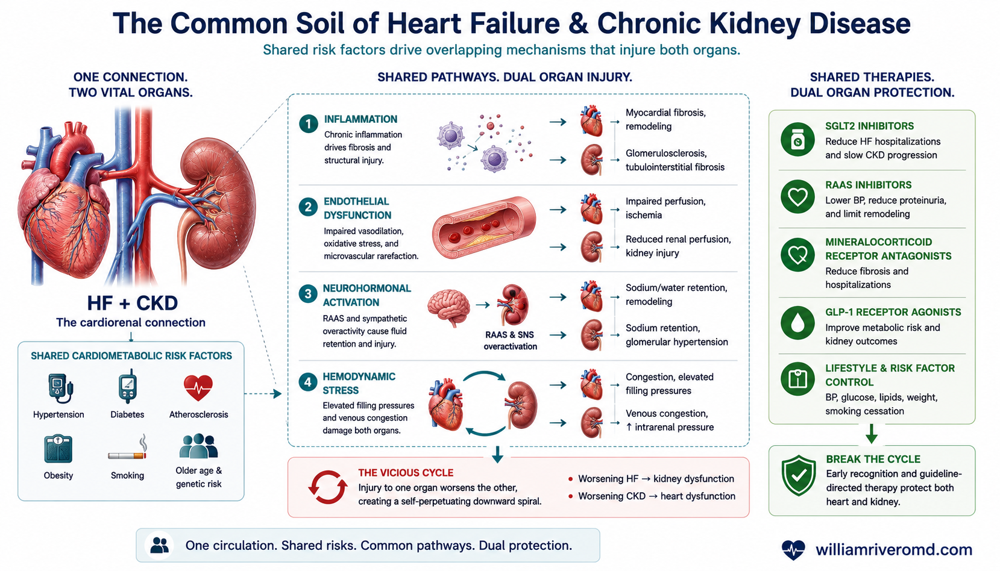
The “common soil”: shared cardiometabolic risk factors injure heart and kidney through the same four mechanisms — and the shared therapies that interrupt the cycle.
- HF / CKD
- Heart failure / chronic kidney disease
- RAAS
- (Renin–angiotensin–aldosterone system)
- SNS
- Sympathetic nervous system
- ROS
- Reactive oxygen species
- SGLT2i
- Sodium–glucose cotransporter-2 inhibitor
- ARNI
- (Angiotensin receptor–neprilysin inhibitor)
- GLP-1
- (Glucagon-like peptide-1) receptor agonist
Most of the time, heart failure and kidney disease are not really two separate accidents. They grow from the same underlying conditions — what researchers call the "common soil." The same three culprits that damage the heart also damage the kidneys:Kadalasan, ang heart failure at sakit sa bato ay hindi talaga dalawang magkahiwalay na aksidente. Tumutubo sila mula sa parehong pinagbabatayang kondisyon — ang tinatawag ng mga mananaliksik na "iisang lupa." Ang parehong tatlong sanhi na sumisira sa puso ay sumisira rin sa bato:Kasagaran, ang heart failure ug sakit sa kidney dili gyud duha ka bulag nga aksidente. Motubo sila gikan sa parehas nga nagpasukad nga kondisyon — ang gitawag sa mga tigdukiduki nga "usa ka yuta." Ang parehas nga tulo ka hinungdan nga nagdaot sa kasingkasing nagdaot usab sa kidney:Kadaklan, ing heart failure at sakit king batu ali la tutu aduang misasaliwang aksidente. Tutubu la mibat king parehong pibatayan a kondisyon — ing ausan da reng mananaliksik a "metung a gabun." Ding parehong atlung sanhi a sisiran na ning pusu sisiran na mu rin ing batu:
🍔 ObesitySobrang TimbangSobra nga TimbangSobrang Timbang
Drives inflammation and insulin resistance; especially linked to the "stiff heart" type of heart failure (HFpEF).Nagdudulot ng pamamaga at insulin resistance; lalo nang nakaugnay sa "matigas na puso" na uri ng heart failure (HFpEF).Nagdala og hubag ug insulin resistance; ilabi nang konektado sa "gahi nga kasingkasing" nga matang sa heart failure (HFpEF).Magdala yang pamamaga at insulin resistance; lalu nang makaugne king "matias a pusu" a uri ning heart failure (HFpEF).
🩸 DiabetesDiabetesDiabetesDiabetes
High blood sugar scars the kidneys' filters and the heart muscle at the same time. The single biggest shared driver in the Philippines.Pinipinsala ng mataas na asukal sa dugo ang mga salaan ng bato at ang kalamnan ng puso nang sabay. Ang pinakamalaking magkasanib na sanhi sa Pilipinas.Ang taas nga asukal sa dugo nagpilas sa salaan sa kidney ug sa unod sa kasingkasing dungan. Ang pinakadako nga managsama nga hinungdan sa Pilipinas.Ing matas a asukal king daya pipinsalan na la reng salaan ning batu at ing laman ning pusu a sabay. Ing pekamaragul a misanib a sanhi king Pilipinas.
🌡️ HypertensionAltapresyonHataas nga PresyonAltapresyon
High pressure forces the heart to thicken and the kidney filters to leak (albuminuria) — an early warning of trouble in both.Pinipilit ng mataas na presyon na kumapal ang puso at tumagas ang mga salaan ng bato (albuminuria) — maagang babala sa parehong organo.Ang taas nga presyon nagpugos sa kasingkasing nga modako ug sa salaan sa kidney nga motulo (albuminuria) — sayo nga pasidaan sa duha.Ing matas a presyon pipilitan na ing pusu a kumapal at ding salaan ning batu a tumagas (albuminuria) — maranun a babala karing aduang organo.
From this shared soil grow four overlapping mechanisms of damage:Mula sa magkasamang lupa na ito tumutubo ang apat na magkakapatong na mekanismo ng pinsala:Gikan niini nga managsama nga yuta motubo ang upat ka nagsapaw nga mekanismo sa kadaot:Mibat king misasanib a gabun a ini tutubu la ding apat a misasapaw a mekanismo ning pinsala:
- Inflammation — a low-grade body-wide "fire" that scars tissue.Pamamaga — mahinang "apoy" sa buong katawan na nagpapaltos sa tisyu.Hubag — hinay nga "kalayo" sa tibuok lawas nga nagpilas sa tisyu.Pamamaga — mababang "api" king mabilug a katawan a magpapaltus king tisyu.
- Endothelial dysfunction — the inner lining of blood vessels stops working well.Endothelial dysfunction — humihina ang panloob na lining ng mga ugat.Endothelial dysfunction — mohuyang ang sulod nga lining sa mga ugat.Endothelial dysfunction — kumati ya ing kilub a lining da reng ugat.
- Neurohormonal overdrive — stress hormones (RAAS, adrenaline) stay switched on, raising pressure and retaining salt.Neurohormonal overdrive — nananatiling bukas ang stress hormones (RAAS, adrenaline), nagtataas ng presyon at nag-iipon ng asin.Neurohormonal overdrive — nagpabilin nga abli ang stress hormones (RAAS, adrenaline), nagpataas sa presyon ug nagtipig sa asin.Neurohormonal overdrive — manatili yang mabuklat ing stress hormones (RAAS, adrenaline), magtas presyon at mag-imun asin.
- Hemodynamic stress — congestion (back-up of fluid) and poor blood flow physically injure both organs.Hemodynamic stress — ang congestion (pag-ipon ng likido) at mahinang daloy ng dugo ay pisikal na nakakapinsala sa dalawang organo.Hemodynamic stress — ang congestion (pundok sa likido) ug huyang nga dagayday sa dugo pisikal nga makadaot sa duha ka organo.Hemodynamic stress — ing congestion (pamag-imun danum) at mababang agus ning daya pisikal nong sisiran ding aduang organo.
Overlapping Symptoms: Is It the Heart, the Kidney, or Both?Magkakapatong na Sintomas: Puso ba, Bato, o Pareho?Nagsapaw nga Simtomas: Kasingkasing ba, Kidney, o Duha?Misasapaw a Sintomas: Pusu, Batu, o Pareho?
Both diseases cause the body to hold on to salt and water. That is why their symptoms look almost identical — and why even doctors sometimes struggle to know which organ is to blame for a given episode of swelling or breathlessness.Parehong nagiging sanhi ang dalawang sakit na manatili sa katawan ang asin at tubig. Kaya halos magkapareho ang kanilang mga sintomas — at kaya kahit mga doktor minsan ay nahihirapang malaman kung aling organo ang dahilan ng isang pagkakataon ng pamamaga o pangangapos ng hininga.Ang duha ka sakit hinungdan nga magpabilin sa lawas ang asin ug tubig. Mao nga halos managsama ang ilang mga simtomas — ug ngano nga bisan ang mga doktor usahay maglisod og kahibalo kung asa nga organo ang hinungdan sa usa ka panghitabo sa hubag o kakapoy sa pagginhawa.Ding aduang sakit sanhi la a manatili king katawan ing asin at danum. Kaya halus mikakapareho la reng karelang sintomas — at bakit kahit ding doktor maminsan mahirapan lang abalu nung nukarin a organo ing dahilan ning metung a pangyayari ning pamamaga o kakapuan ning inawa.
The Three Numbers Every Heart-and-Kidney Patient Should KnowAng Tatlong Numero na Dapat Alam ng Bawat Pasyenteng May Sakit sa Puso at BatoAng Tulo ka Numero nga Angay Mahibal-an sa Matag Pasyente sa Kasingkasing ug KidneyDing Atlung Numero a Dapat Abalu ning Balang Pasyenteng Atin Sakit king Pusu at Batu
eGFR — the kidney's filtering speed— ang bilis ng pagsasala ng bato— ang katulin sa pagsala sa kidney— ing bilis ning pamanyala ning batu
Estimated from a creatinine blood test. It tells you what percent of normal filtering your kidneys still do. A lower eGFR strongly predicts worse outcomes in every type of heart failure. In some cases a cystatin C test gives a more accurate reading, especially in very thin or muscular people.Tinatantya mula sa creatinine blood test. Sinasabi nito kung ilang porsyento ng normal na pagsasala ang ginagawa pa ng iyong bato. Ang mas mababang eGFR ay matinding nagpapahiwatig ng mas masamang resulta sa bawat uri ng heart failure. Sa ilang kaso, ang cystatin C test ay nagbibigay ng mas tumpak na pagbasa, lalo na sa napakapayat o muscular na tao.Gibanabana gikan sa creatinine blood test. Gisulti niini kung pila ka porsyento sa normal nga pagsala ang gibuhat pa sa imong kidney. Ang ubos nga eGFR kusganong nagtagna sa mas grabe nga resulta sa matag matang sa heart failure. Sa ubang kaso ang cystatin C test naghatag og mas tukma nga pagbasa, ilabi na sa niwang o muscular nga tawo.Tatantyan mibat king creatinine blood test. Sasabian na nung pilan a porsyento ning normal a pamanyala ing gagawan pa ning kekang batu. Ing mas mababang eGFR masikan nong magpakit ning mas marok a resulta king balang uri ning heart failure. King mapilan a kaso ing cystatin C test mibie yang mas tumpak a pamamasa, lalu na karing makapayat o muscular a tau.
UACR — protein leaking into the urine— protina na tumatagas sa ihi— protina nga motulo sa ihi— protina a tumagas king mih
A simple urine test (urine albumin-to-creatinine ratio). Even a small leak is an early independent warning of future heart failure and of cardiovascular death — sometimes as powerful a warning as the heart's own blood marker. Yet studies show only about 1 in 5 at-risk people ever get this test. Ask for it.Simpleng pagsusuri ng ihi (urine albumin-to-creatinine ratio). Kahit maliit na tagas ay isang maaga at hiwalay na babala ng darating na heart failure at ng pagkamatay sa cardiovascular — minsan kasingtindi ng babala ng sariling marker ng puso. Gayunpaman ipinapakita ng mga pag-aaral na 1 sa 5 lang ng nasa panganib ang nakakakuha ng test na ito. Hingin ito.Yano nga pagsusi sa ihi (urine albumin-to-creatinine ratio). Bisan gamay nga tulo usa ka sayo ug bulag nga pasidaan sa umaabot nga heart failure ug sa cardiovascular nga kamatayon — usahay sama kakusog sa pasidaan sa kaugalingong marker sa kasingkasing. Apan gipakita sa mga pagtuon nga 1 sa 5 lang sa namiligro ang nakakuha niini nga test. Pangayoa kini.Simpleng pamagsuri ning mih (urine albumin-to-creatinine ratio). Kahit malating tagas ya metung a maranun at misaliwang babala ning datang a heart failure at ning pamate king cardiovascular — maminsan kasingsikan ning babala ning sariling marker ning pusu. Dapot pakit da reng pag-aral a 1 king 5 mu karing atin peligru ing makakua ning test a ini. Pakisabian ye.
BNP / NT-proBNP — the heart's stretch signal— hudyat ng pag-igting ng puso— senyas sa pag-inat sa kasingkasing— senyas ning pamag-inat ning pusu
A blood marker the heart releases when its walls are stretched by fluid overload. High levels support a diagnosis of heart failure; a normal level is reassuring and helps rule it out.Isang marker sa dugo na inilalabas ng puso kapag naiunat ang mga dingding nito ng sobrang likido. Ang mataas na lebel ay sumusuporta sa diyagnosis ng heart failure; ang normal na lebel ay nakaaaliw at tumutulong na ibukod ito.Usa ka marker sa dugo nga gibuhian sa kasingkasing kung ang mga bungbong niini gi-inat sa sobra nga likido. Ang taas nga lebel nagsuporta sa diyagnosis sa heart failure; ang normal nga lebel makapahupay ug makatabang sa pag-ekslud niini.Metung a marker king daya a ilalwal ning pusu nung ma-inat la reng dinding na ning sobrang danum. Ing matas a lebel susuportan na ing diyagnosis ning heart failure; ing normal a lebel makapanatag at makasaup yang iyalis ini.
Staging: every person with CKD is already "Stage A" heart failurePag-stage: bawat taong may CKD ay "Stage A" na heart failurePag-stage: matag tawo nga adunay CKD kay "Stage A" na heart failurePag-stage: balang taung atin CKD "Stage A" neng heart failure
Heart failure is now staged like cancer, from A to D. Stage A means "at risk but no damage yet." The 2024 expert panel proposed that anyone with CKD (eGFR under 60, or protein in the urine) should automatically be counted as Stage A — a flag to start protecting the heart before symptoms ever appear.Ang heart failure ay nila-stage na ngayon tulad ng kanser, mula A hanggang D. Ang Stage A ay nangangahulugang "nasa panganib ngunit wala pang pinsala." Iminungkahi ng 2024 panel ng mga eksperto na sinumang may CKD (eGFR mababa sa 60, o may protina sa ihi) ay dapat awtomatikong ibilang na Stage A — isang hudyat para simulan ang pagprotekta sa puso bago pa lumitaw ang sintomas.Ang heart failure gi-stage na karon sama sa kanser, gikan A hangtod D. Ang Stage A nagpasabot "namiligro apan walay kadaot pa." Gisugyot sa 2024 nga panel sa mga eksperto nga bisan kinsa nga adunay CKD (eGFR ubos sa 60, o adunay protina sa ihi) angay awtomatikong iphon nga Stage A — usa ka pasidaan aron sugdan ang pagpanalipod sa kasingkasing sa wala pa motungha ang simtomas.Ing heart failure i-stage ne ngeni anti ning kanser, mibat A angga D. Ing Stage A retang "atin peligru dapot ala pang pinsala." Sinuyu ne ning 2024 panel da reng eksperto a ninu mang atin CKD (eGFR mababa king 60, o atin protina king mih) dapat awtomatikong bilangan a Stage A — metung a senyas bang umpisan ing pamagprotekta king pusu bayu pa lumto ing sintomas.
When Kidney Numbers Dip After Starting a Heart Medicine — Don't Panic, Don't StopKapag Bumaba ang Numero ng Bato Pagkatapos Magsimula ng Gamot sa Puso — Huwag Mataranta, Huwag ItigilKung Mokunhod ang Numero sa Kidney Human Magsugod og Tambal sa Kasingkasing — Ayaw Kalisang, Ayaw UndangaNung Kumati ya ing Numero ning Batu Kaibat Mag-umpisa Gamut king Pusu — E ka Mataranta, E me Itigil
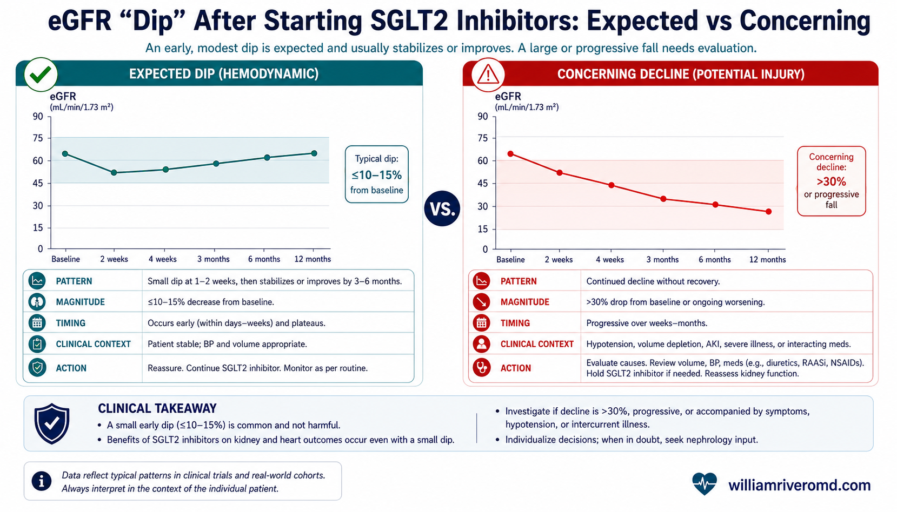
An expected eGFR “dip” (up to ~30%) that then stabilises is usually safe — continue the medicine. A continuous fall, or red flags, warrants investigation.
- eGFR
- Estimated glomerular filtration rate
- BP
- Blood pressure
This is the single most important — and most misunderstood — idea in heart-and-kidney care. Many of the best heart medicines cause a small, immediate drop in the eGFR when you first start them. This frightens patients and doctors, and too often a life-saving medicine is stopped because of it. That is usually a mistake.Ito ang pinakamahalaga — at pinakamaling-unawa — na ideya sa pangangalaga ng puso at bato. Marami sa pinakamahuhusay na gamot sa puso ay nagdudulot ng maliit at agarang pagbaba ng eGFR kapag sinimulan mo ang mga ito. Tinatakot nito ang mga pasyente at doktor, at madalas itinitigil ang gamot na nagliligtas ng buhay dahil dito. Iyan ay kadalasang isang pagkakamali.Kini ang labing importante — ug labing sayop nga masabtan — nga ideya sa pag-atiman sa kasingkasing ug kidney. Daghan sa pinakamaayong tambal sa kasingkasing ang hinungdan og gamay ug diha-diha nga pagkanaog sa eGFR kung magsugod ka niini. Kini nagpahadlok sa mga pasyente ug doktor, ug kanunay giundang ang tambal nga makaluwas og kinabuhi tungod niini. Kana kasagaran usa ka sayop.Iti ya ing pekamahalaga — at pekamaling-aintindi — a ideya king pamanatiman ning pusu at batu. Dakal karing pekamayap a gamut king pusu ing sanhi ning malati at agad a pamababa ning eGFR nung umpisan mu la. Tatakutan na la ning pasyente at doktor, at pirmi itigil ing gamut a maligtas ning bie uli na nita. Iyan ya kadaklan a metung a kamalian.
When should you worry? When the fall is steeper than 30%, when it keeps dropping instead of settling, or when it comes with red flags like very high potassium, signs of dehydration, or blood/protein storm in the urine. Then your doctor looks for another cause. The skill is telling a harmless "dip" apart from true injury — and not throwing away a good medicine for the former.Kailan ka dapat mag-alala? Kapag mas matarik sa 30% ang pagbaba, kapag patuloy itong bumababa sa halip na huminto, o kapag may kasama itong red flag tulad ng napakataas na potassium, palatandaan ng dehydration, o pag-alsa ng dugo/protina sa ihi. Doon hahanapin ng iyong doktor ang ibang sanhi. Ang husay ay ang pagkakaiba ng hindi nakapipinsalang "dip" sa tunay na pinsala — at hindi pagtatapon ng mabuting gamot para sa una.Kanus-a ka angay mabalaka? Kung mas tarik sa 30% ang pagkanaog, kung magpadayon kini sa pagkanaog imbes nga molig-on, o kung adunay kuyog nga red flag sama sa taas kaayo nga potassium, timailhan sa dehydration, o pag-ulbo sa dugo/protina sa ihi. Didto pangitaon sa imong doktor ang laing hinungdan. Ang kahanas mao ang pag-ila sa walay kadaot nga "dip" gikan sa tinuod nga kadaot — ug dili paglabay sa maayong tambal alang sa una.Kapilan ka dapat mag-alala? Nung mas matarik king 30% ing pamababa, nung tuloy-tuloy yang kumati imbes a tumuknang, o nung atin kayabe a red flag anti ning masyadong matas a potassium, tanda ning dehydration, o pamag-alsa ning daya/protina king mih. Karin yang panintunan ning kekang doktor ing aliwang sanhi. Ing galing ya ing pikakaiba ning ali makapinsalang "dip" king tutung pinsala — at ali pamagtapun ning mayap a gamut uli ning minuna.
Decision tree: my kidney number dropped after a new heart medicine — now what?Decision tree: bumaba ang numero ng aking bato pagkatapos ng bagong gamot sa puso — ano ngayon?Decision tree: mikunhod ang numero sa akong kidney human sa bag-ong tambal sa kasingkasing — unsa na?Decision tree: kinati ya ing numero ning kakung batu kaibat ning bayung gamut king pusu — nanu ngeni?
A simplified version of how clinicians think it through. This is for understanding — your doctor makes the final call with your full results.Pinasimpleng bersyon ng iniisip ng mga kliniko. Ito ay para sa pag-unawa — ang iyong doktor ang may huling pasya gamit ang buo mong resulta.Pinasimple nga bersyon sa gihunahuna sa mga kliniko. Kini alang sa pagsabot — ang imong doktor ang naghimo sa katapusang desisyon gamit ang imong tibuok resulta.Pinasimpleng bersyon ning iisipan da reng kliniko. Iti para king pamag-aintindi — ing kekang doktor ing atin tauling pasya a atin mabilug a resulta mu.
Expected, harmless "dip." Continue the medicine. Recheck in a few weeks — it usually stabilises.Inaasahan, hindi nakapipinsalang "dip." Ituloy ang gamot. Suriin muli sa loob ng ilang linggo — kadalasang nag-i-stabilize.Gidahom, walay kadaot nga "dip." Ipadayon ang tambal. Susiha pag-usab sa pipila ka semana — kasagaran molig-on.Inaasan, alang pinsalang "dip." Ituloy ing gamut. Surian pasibayu king mapilan a duminggu — kadaklan ma-stabilize.
Don't stop on your own — call your doctor. They look for another cause (dehydration, other drugs like NSAIDs, blockage) before deciding to pause or adjust.Huwag itigil nang mag-isa — tawagan ang iyong doktor. Hahanapin nila ang ibang sanhi (dehydration, ibang gamot tulad ng NSAIDs, barado) bago magpasyang ihinto o iakma.Ayaw undanga nga ikaw ra — tawagi ang imong doktor. Mangita sila og laing hinungdan (dehydration, ubang tambal sama sa NSAIDs, barahan) sa dili pa magdesisyon nga ihunong o i-adjust.E me itigil a sarili mu — ausan me ing kekang doktor. Panintunan da ing aliwang sanhi (dehydration, aliwang gamut anti ning NSAIDs, barat) bayu mamye desisyon a itigil o i-adjust.
The Modern Medicines That Protect Heart and Kidney at OnceAng mga Makabagong Gamot na Sabay na Nagpoprotekta sa Puso at BatoAng Bag-ong mga Tambal nga Dungan Nagpanalipod sa Kasingkasing ug KidneyDing Bayung Gamut a Sabay nong Protektan ing Pusu at Batu
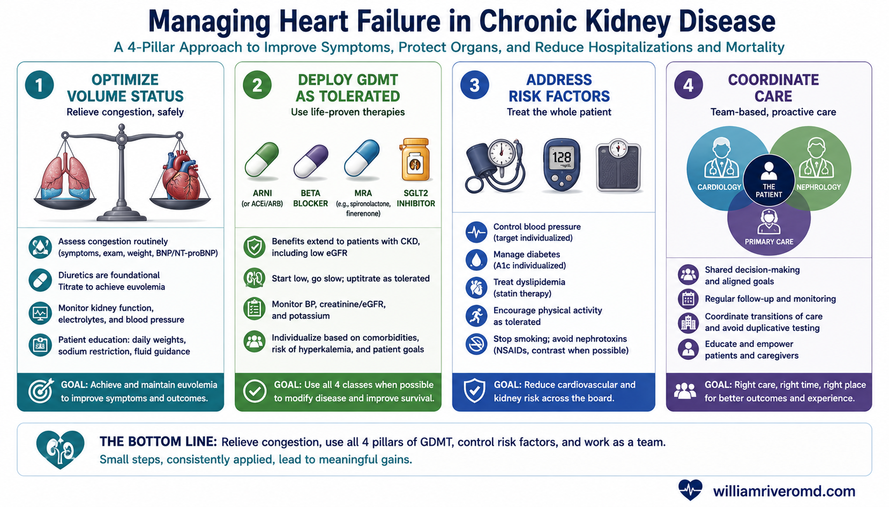
A four-pillar approach to managing heart failure with CKD: control fluid, use the protective medicines, treat the whole patient, and coordinate care.
- GDMT
- Guideline-directed medical therapy
- SGLT2i
- Sodium–glucose cotransporter-2 inhibitor
- ARNI
- Angiotensin receptor–neprilysin inhibitor
- ACEi / ARB
- ACE inhibitor / angiotensin receptor blocker
- MRA
- Mineralocorticoid receptor antagonist
- BNP / NT-proBNP
- (N-terminal pro–) B-type natriuretic peptide
The good news of the last decade is enormous: several medicine classes now protect both organs. The biggest mindset shift is to start them early and to combine them, rather than waiting for one organ to fail badly first. Here are the main players.Napakalaki ng magandang balita sa nakaraang dekada: ilang uri ng gamot ang nagpoprotekta na ngayon sa parehong organo. Ang pinakamalaking pagbabago ng pag-iisip ay simulan ang mga ito nang maaga at pagsamahin, sa halip na maghintay na pumalya muna nang malala ang isang organo. Narito ang mga pangunahing manlalaro.Dako kaayo ang maayong balita sa miaging dekada: pipila ka klase sa tambal nagpanalipod na karon sa duha ka organo. Ang pinakadako nga kausaban sa panghunahuna mao ang pagsugod niini og sayo ug paghiusa niini, imbes maghulat nga mapakyas pag-ayo ang usa ka organo una. Ania ang mga nag-unang magduladula.Maragul ya ing mayap a balita king milabas a dekada: mapilan a klase ning gamut ing protektan na ngeni ing aduang organo. Ing pekamaragul a pamagbayu ning isip ya ing umpisan deni a maranun at pisanan, imbes magantabe a mamalya pang grabe ing metung a organo. Eni la ding pekamaragul a manyalbe.
SGLT2 inhibitors — the cornerstone— ang pundasyon— ang patukoranan— ing pundasyon
Dapagliflozin and empagliflozin (the "-flozins," originally diabetes pills) are the breakthrough drugs of cardio-renal medicine. They cut the combined risk of heart-failure hospitalisation or cardiovascular death by roughly a quarter (≈25%) — and the benefit holds across every type of heart failure, with or without diabetes, and they protect the kidneys at the same time. They can be started at an eGFR as low as 20. They are now a first-line medicine for almost everyone with heart-and-kidney disease.Ang dapagliflozin at empagliflozin (ang mga "-flozin," dating gamot sa diabetes) ang mga pambihirang gamot ng cardio-renal medicine. Binabawasan nila ang pinagsamang panganib ng pagpapaospital dahil sa heart failure o pagkamatay sa cardiovascular nang humigit-kumulang isang-kapat (≈25%) — at humahawak ang benepisyo sa bawat uri ng heart failure, may diabetes man o wala, at sabay nilang pinoprotektahan ang bato. Maaari silang simulan kahit eGFR ay kasingbaba ng 20. Sila ngayon ay first-line na gamot para sa halos lahat ng may sakit sa puso at bato.Ang dapagliflozin ug empagliflozin (ang mga "-flozin," kanhi tambal sa diabetes) mao ang dagkong kalampusan nga tambal sa cardio-renal medicine. Gikunhoran nila ang gihiusa nga risgo sa pagpa-ospital tungod sa heart failure o cardiovascular nga kamatayon og mga ikaupat (≈25%) — ug ang kaayohan magpabilin sa matag matang sa heart failure, adunay diabetes o wala, ug dungan nilang gipanalipdan ang kidney. Mahimo kini sugdan bisan ang eGFR ubos pa sa 20. Sila karon usa ka first-line nga tambal alang sa halos tanan nga adunay sakit sa kasingkasing ug kidney.Ing dapagliflozin at empagliflozin (ding "-flozin," dating gamut king diabetes) ila ding maragul a tagumpe ning cardio-renal medicine. Babawasan da ing pisanan a peligru ning pamagpaospital uli ning heart failure o pamate king cardiovascular a aganaganang kapat (≈25%) — at manatili ya ing benepisyu king balang uri ning heart failure, atin diabetes man o ala, at sabay dong protektan ing batu. Pwede lang umpisan kahit eGFR makababa king 20. Ila ngeni first-line a gamut para king halus eganagana atin sakit king pusu at batu.
RAAS blockers: ACEi, ARB, and ARNI — protect the filters— pinoprotektahan ang mga salaan— gipanalipdan ang salaan— protektan ding salaan
These relax blood vessels and lower the pressure inside the kidney's filters, reducing protein leak and easing the heart's workload. ARNI (sacubitril/valsartan) is a newer, stronger version for the weak-pump type of heart failure. The key teaching: in CKD these should usually be continued even as eGFR falls, and only paused for a creatinine rise greater than ~50%, an eGFR below 25, or dangerous potassium. Never take an ACEi/ARB and ARNI together.Pinaluluwag ng mga ito ang mga ugat at ibinababa ang presyon sa loob ng mga salaan ng bato, binabawasan ang pagtagas ng protina at pinagaan ang trabaho ng puso. Ang ARNI (sacubitril/valsartan) ay mas bago at mas malakas na bersyon para sa mahinang-bomba na uri ng heart failure. Ang pangunahing turo: sa CKD kadalasan dapat itong ituloy kahit bumaba ang eGFR, at ititigil lamang sa pagtaas ng creatinine na higit sa ~50%, eGFR na mababa sa 25, o mapanganib na potassium. Huwag kailanman uminom ng ACEi/ARB at ARNI nang sabay.Kini nagpaluag sa mga ugat ug nagpaubos sa presyon sulod sa salaan sa kidney, nagkunhod sa tulo sa protina ug nagpagaan sa trabaho sa kasingkasing. Ang ARNI (sacubitril/valsartan) usa ka mas bag-o ug mas kusgan nga bersyon alang sa huyang-bomba nga matang sa heart failure. Ang nag-unang pagtulon-an: sa CKD kasagaran kini angay ipadayon bisan mokunhod ang eGFR, ug ihunong lamang sa pagsaka sa creatinine nga labaw sa ~50%, eGFR ubos sa 25, o delikado nga potassium. Ayaw gyud pag-inom og ACEi/ARB ug ARNI dungan.Deni paluagan da la reng ugat at ibaba da ing presyon king kilub da reng salaan ning batu, babawasan ing tagas ning protina at pagaanan ing dapat ning pusu. Ing ARNI (sacubitril/valsartan) mas bayu at mas masikan a bersyon para king mahinang-bomba a uri ning heart failure. Ing pekamaragul a aral: king CKD kadaklan dapat itong ituloy kahit kumati ya ing eGFR, at itigil mu king pamagtas ning creatinine a labi king ~50%, eGFR a mababa king 25, o delikadung potassium. E ka manginum ACEi/ARB at ARNI a sabay.
MRA & finerenone — calming the scarring hormone— pinapakalma ang hormone ng peklat— gipakalma ang hormon sa peklat— pakalmen ing hormon ning piklat
Mineralocorticoid receptor antagonists block aldosterone, a hormone that drives salt retention and organ scarring (fibrosis). The older "steroidal" ones (spironolactone, eplerenone) help the heart but raise potassium. Finerenone is a newer "non-steroidal" version: in diabetic kidney disease it slows kidney decline, and the 2024 FINEARTS-HF trial showed it also reduces heart-failure events in the stiff-heart (preserved ejection fraction) type — the first drug of its class to do so. It is started at an eGFR of 25 or above with careful potassium checks.Hinaharangan ng mineralocorticoid receptor antagonists ang aldosterone, isang hormone na nagtutulak ng pag-iipon ng asin at pagpepeklat ng organo (fibrosis). Ang mas lumang "steroidal" (spironolactone, eplerenone) ay nakatutulong sa puso ngunit nagpapataas ng potassium. Ang finerenone ay mas bagong "non-steroidal" na bersyon: sa diabetic kidney disease pinabbabagal nito ang paghina ng bato, at ipinakita ng 2024 FINEARTS-HF trial na binabawasan din nito ang mga heart-failure event sa matigas-na-puso (preserved ejection fraction) na uri — ang unang gamot ng uri nito na nakagawa nito. Sinisimulan ito sa eGFR na 25 pataas na may maingat na pagsusuri ng potassium.Ang mineralocorticoid receptor antagonists nag-ali sa aldosterone, usa ka hormon nga nag-aghat sa pagtipig sa asin ug pagpeklat sa organo (fibrosis). Ang mas daan nga "steroidal" (spironolactone, eplerenone) makatabang sa kasingkasing apan nagpataas sa potassium. Ang finerenone usa ka mas bag-o nga "non-steroidal" nga bersyon: sa diabetic kidney disease gipahinay niini ang paghuyang sa kidney, ug ang 2024 FINEARTS-HF nga pagsulay nagpakita nga gikunhoran usab niini ang mga heart-failure event sa gahi-nga-kasingkasing (preserved ejection fraction) nga matang — ang unang tambal sa klase niini nga nakahimo niini. Gisugdan kini sa eGFR nga 25 pataas uban ang mabinantayong pagsusi sa potassium.Ding mineralocorticoid receptor antagonists alangan da ing aldosterone, metung a hormon a magtulak king pamag-imun asin at pamagpiklat ning organo (fibrosis). Ding mas matuang "steroidal" (spironolactone, eplerenone) makasaup la king pusu dapot magtas potassium. Ing finerenone mas bayung "non-steroidal" a bersyon: king diabetic kidney disease pabagalan na ing pamagkati ning batu, at pekit ne ning 2024 FINEARTS-HF trial a babawasan na mu rin ding heart-failure event king matias-a-pusu (preserved ejection fraction) a uri — ing minunang gamut ning klase na a megawa kanita. Umpisan ya king eGFR a 25 paitas a atin maingat a pamagsuri ning potassium.
GLP-1 receptor agonists — the metabolic protector— ang metabolic na tagapagtanggol— ang metaboliko nga tigpanalipod— ing metaboliko a manalakad
Semaglutide and similar weekly injections (originally for diabetes and weight loss) are the newest arrivals. The 2024 FLOW trial showed semaglutide cut major kidney events by 24%, cardiovascular events by 18%, and death by 20% in people with diabetes and CKD. A separate trial (STEP-HFpEF) showed it improves symptoms, exercise capacity and weight in people with the stiff-heart type of heart failure plus obesity. Especially valuable for the very common Filipino combination of diabetes, obesity, heart, and kidney disease.Ang semaglutide at mga katulad na lingguhang iniksyon (dating para sa diabetes at pagbaba ng timbang) ang pinakabagong dating. Ipinakita ng 2024 FLOW trial na binawasan ng semaglutide ang malalaking kidney event nang 24%, cardiovascular event nang 18%, at kamatayan nang 20% sa mga taong may diabetes at CKD. Isang hiwalay na trial (STEP-HFpEF) ang nagpakita na pinapabuti nito ang sintomas, kakayahang mag-ehersisyo, at timbang sa mga taong may matigas-na-puso na uri ng heart failure at sobra sa timbang. Lalo nang mahalaga para sa napakakaraniwang kombinasyon ng diabetes, obesity, puso, at sakit sa bato sa mga Pilipino.Ang semaglutide ug susama nga semanal nga iniksyon (kanhi alang sa diabetes ug pagpagaan sa timbang) mao ang pinakabag-o nga miabot. Ang 2024 FLOW nga pagsulay nagpakita nga gikunhoran sa semaglutide ang dagkong kidney event og 24%, cardiovascular event og 18%, ug kamatayon og 20% sa mga tawo nga adunay diabetes ug CKD. Ang lain nga pagsulay (STEP-HFpEF) nagpakita nga gipaayo niini ang simtomas, abilidad sa ehersisyo, ug timbang sa mga tawo nga adunay gahi-nga-kasingkasing nga matang sa heart failure ug sobra nga timbang. Ilabi nang bililhon alang sa kasagarang kombinasyon sa Pilipino sa diabetes, obesity, kasingkasing, ug sakit sa kidney.Ing semaglutide at mikakatulad a lingguhang iniksyon (dating para king diabetes at pamababa ning timbang) ila ding pekabayung datang. Pekit ne ning 2024 FLOW trial a binawasan na ning semaglutide ding maragul a kidney event a 24%, cardiovascular event a 18%, at kamatayan a 20% karing taung atin diabetes at CKD. Metung a misaliwang trial (STEP-HFpEF) pekit na a papayapan na ing sintomas, kayang mag-ehersisyo, at timbang karing taung atin matias-a-pusu a uri ning heart failure at sobra king timbang. Lalu nang mahalaga para king pekakaraniwan a kombinasyon da reng Pilipino king diabetes, obesity, pusu, at sakit king batu.
Quick reference: when can each medicine be started?Mabilisang sanggunian: kailan masisimulan ang bawat gamot?Paspas nga reperensiya: kanus-a masugdan ang matag tambal?Mabilis a sanggunian: kapilan masimulan ing balang gamut?
| Medicine class | Protects | Usual eGFR floor to start | Main watch-out |
|---|---|---|---|
| SGLT2 inhibitor (dapa-, empagliflozin) | Heart + Kidney | ≥ 20 | Small expected eGFR dip; rare genital infections; pause during acute illness/fasting. |
| ACEi / ARB | Heart + Kidney | Continue even below 30; stop only if creatinine rises >50% or eGFR < 25 | Potassium, eGFR dip. |
| ARNI (sacubitril/valsartan) | Heart (weak pump) | ≥ 30 (reduced dose below 30) | Low BP; never combine with ACEi/ARB. |
| Finerenone (nsMRA) | Heart + Kidney | ≥ 25 (with type 2 diabetes + albuminuria) | Potassium — needs monitoring. |
| Steroidal MRA (spironolactone) | Heart | eGFR > 30 / creatinine < 2.5 | Higher potassium risk than finerenone. |
| GLP-1 RA (semaglutide) | Heart + Kidney + weight | Down to 15 (for glucose) | Nausea; pause if severe vomiting. |
| Beta-blocker | Heart (weak pump) | Any eGFR | Slows heart rate; go slowly. |
| Loop diuretic (furosemide) | Symptoms (fluid) | Any eGFR (higher doses needed when low) | Relieves congestion but does not prolong life — use the lowest effective dose. |
Thresholds adapted from the 2024 KDIGO Heart Failure & CKD conference and current cardiology/nephrology guidelines. Your own targets depend on your blood pressure, potassium, and how you feel — always individualised by your doctor.Ang mga threshold ay hango sa 2024 KDIGO Heart Failure at CKD conference at kasalukuyang gabay sa cardiology/nephrology. Ang iyong mga target ay nakadepende sa iyong presyon, potassium, at kung ano ang nararamdaman mo — palaging ini-individualize ng iyong doktor.Ang mga threshold gikan sa 2024 KDIGO Heart Failure ug CKD conference ug karon nga giya sa cardiology/nephrology. Ang imong mga target nagdepende sa imong presyon, potassium, ug giunsa nimo pagbati — kanunay gi-individualize sa imong doktor.Ding threshold mibat king 2024 KDIGO Heart Failure at CKD conference at kasalukuyan a giya king cardiology/nephrology. Ding kekang target nakadepende king kekang presyon, potassium, at nung nanu ing daramdam mu — pirming i-individualize ning kekang doktor.
Managing Fluid Overload When Both Organs Are StrugglingPamamahala sa Sobrang Likido Kapag Naghihirap ang Dalawang OrganoPagdumala sa Sobra nga Likido Kung Naglisod ang Duha ka OrganoPamamahala king Sobrang Danum Nung Maglisud la Reng Aduang Organo
Congestion — fluid backing up into the lungs, belly, and legs — is the number-one reason people with heart-and-kidney disease land in hospital. Diuretics ("water pills") are the main tool to drain that fluid and relieve breathlessness. They make you feel dramatically better, but it is important to know they treat the symptom, not the disease — so they are used at the lowest dose that keeps you comfortable, while the protective medicines above do the long-term work.Ang congestion — pag-ipon ng likido sa baga, tiyan, at binti — ang numero-unong dahilan kung bakit napupunta sa ospital ang mga taong may sakit sa puso at bato. Ang diuretics ("water pills") ang pangunahing kasangkapan para patuluin ang likidong iyon at maibsan ang pangangapos. Pinaramdam ka nilang mas mabuti nang husto, ngunit mahalagang malaman na ginagamot nila ang sintomas, hindi ang sakit — kaya ginagamit ang mga ito sa pinakamababang dosis na nagpapanatiling komportable ka, habang ginagawa ng mga protektibong gamot sa itaas ang pangmatagalang trabaho.Ang congestion — pagpundok sa likido sa baga, tiyan, ug bitiis — mao ang numero-uno nga rason nganong ma-ospital ang mga tawo nga adunay sakit sa kasingkasing ug kidney. Ang diuretics ("water pills") mao ang nag-unang himan aron pahubson kana nga likido ug pagpagaan sa kakapoy sa pagginhawa. Gipabati ka nila og mas maayo kaayo, apan importante mahibal-an nga gitambalan nila ang simtomas, dili ang sakit — busa gigamit kini sa pinakaubos nga dosis nga magpabilin kang komportable, samtang ang panalipod nga tambal sa ibabaw nagbuhat sa dugay nga trabaho.Ing congestion — pamag-imun danum king baga, atian, at bitis — ing numero-unong dahilan bakit makarin la ospital ding taung atin sakit king pusu at batu. Ding diuretics ("water pills") ila ding pekamaragul a gamit bang patuluan ing danum a ita at mababawasan ing kakapuan ning inawa. Padaramdaman da kang mas mayap, dapot mahalagang abalu a gagamutan da ing sintomas, ali ing sakit — kaya gagamitan deni king pekamababang dosis a magpanatiling komportable ka, kabang gagawan da reng protektibong gamut king babo ing pangmatagal a dapat.
When the water pills stop working: diuretic resistanceKapag hindi na gumagana ang water pills: diuretic resistanceKung dili na molihok ang water pills: diuretic resistanceNung ali na gagana ing water pills: diuretic resistance
As kidney function falls, the same dose of water pill drains less fluid — a problem called diuretic resistance, and it is especially common in the stiff-heart type. Doctors have a toolkit for this:Habang bumababa ang paggana ng bato, mas kaunting likido ang napapatulo ng parehong dosis ng water pill — isang problemang tinatawag na diuretic resistance, at lalo itong karaniwan sa matigas-na-puso na uri. May toolkit ang mga doktor para dito:Samtang mokunhod ang gana sa kidney, mas gamay nga likido ang mapahubas sa parehas nga dosis sa water pill — usa ka problema nga gitawag og diuretic resistance, ug ilabi nga kasagaran sa gahi-nga-kasingkasing nga matang. Adunay toolkit ang mga doktor alang niini:Kabang kumati ya ing gana ning batu, mas kaunting danum ing mapatulu ning parehong dosis ning water pill — metung a problemang ausan dang diuretic resistance, at lalu yang karaniwan king matias-a-pusu a uri. Atin toolkit ding doktor para kanini:
- Higher or IV doses — low kidney function simply needs more drug to reach the target.Mas mataas o IV na dosis — ang mababang paggana ng bato ay nangangailangan lang ng mas maraming gamot para maabot ang target.Mas taas o IV nga dosis — ang ubos nga gana sa kidney nagkinahanglan lang og daghang tambal aron makab-ot ang target.Mas matas o IV a dosis — ing mababang gana ning batu kailangan na mu ning mas dakal a gamut bang abut ing target.
- Combining diuretics ("sequential nephron blockade") — adding a thiazide or other pill that works at a different part of the kidney.Pagsasama ng diuretics ("sequential nephron blockade") — pagdaragdag ng thiazide o ibang gamot na gumagana sa ibang bahagi ng bato.Paghiusa sa diuretics ("sequential nephron blockade") — pagdugang og thiazide o laing tambal nga molihok sa lain nga bahin sa kidney.Pamipisan da reng diuretics ("sequential nephron blockade") — pamagdagdag ning thiazide o aliwang gamut a gagana king aliwang bahagi ning batu.
- Checking the urine sodium a couple of hours after a dose — a smart, simple way to see if the diuretic is actually working.Pagsusuri ng sodium sa ihi ilang oras pagkatapos ng dosis — matalino at simpleng paraan para makita kung talagang gumagana ang diuretic.Pagsusi sa sodium sa ihi pipila ka oras human sa dosis — maalamon ug yano nga paagi aron makita kung naglihok gyud ang diuretic.Pamagsuri ning sodium king mih mapilan a oras kaibat ning dosis — matalinu at simpleng paralan bang akit nung tutu yang gagana ing diuretic.
When the kidneys can no longer remove enough fluid even with maximal drugs (refractory overload), ultrafiltration or dialysis can physically pull the water out. For some people with end-stage disease, peritoneal dialysis at home is a gentle option — it removes fluid steadily without sharp blood-pressure swings, needs no vascular access, and preserves independence.Kapag hindi na maalis ng bato ang sapat na likido kahit may pinakamataas na gamot (refractory na pag-umapaw), maaaring pisikal na hilahin ng ultrafiltration o dialysis ang tubig palabas. Para sa ilang taong may end-stage na sakit, ang peritoneal dialysis sa bahay ay isang banayad na opsyon — inaalis nito ang likido nang tuloy-tuloy nang walang matinding pagbabago ng presyon, hindi nangangailangan ng vascular access, at pinapanatili ang kalayaan.Kung dili na makakuha ang kidney og igo nga likido bisan sa pinakataas nga tambal (refractory nga sobra), ang ultrafiltration o dialysis makakuha sa tubig pisikal. Alang sa ubang tawo nga adunay end-stage nga sakit, ang peritoneal dialysis sa balay usa ka malumo nga kapilian — gikuha niini ang likido nga makanunayon nga walay hait nga kausaban sa presyon, walay gikinahanglan nga vascular access, ug gipreserbar ang kagawasan.Nung ali na ne maalis ning batu ing igung danum kahit atin pekamatas a gamut (refractory a pamag-apaw), pwede yang pisikal a guyuran ning ultrafiltration o dialysis ing danum palwal. Para king mapilan a taung atin end-stage a sakit, ing peritoneal dialysis king bale metung yang malumu a opsyon — alisan na ing danum a tuloy-tuloy a alang masikan a pamagbayu ning presyon, ali kailangan vascular access, at panatilian na ing kalayaan.
Decision tree: is the water pill actually working?Decision tree: gumagana ba talaga ang water pill?Decision tree: naglihok ba gyud ang water pill?Decision tree: tutu yang gagana ing water pill?
A simplified version of how doctors check diuretic response during a flare of congestion (adapted from the European Society of Cardiology / KDIGO approach).Pinasimpleng bersyon ng pagsusuri ng doktor sa tugon sa diuretic sa panahon ng congestion (hango sa ESC / KDIGO).Pinasimple nga bersyon sa pagsusi sa doktor sa tubag sa diuretic atol sa congestion (gikan sa ESC / KDIGO).Pinasimpleng bersyon ning pamagsuri ning doktor king tugun king diuretic king panaun ning congestion (mibat king ESC / KDIGO).
Continue until you reach your dry weight (euvolemia), then step the diuretic back down and keep the protective medicines going.Ituloy hanggang maabot ang dry weight (euvolemia), pagkatapos ibaba ang diuretic at panatilihin ang protektibong gamot.Ipadayon hangtod maabot ang dry weight (euvolemia), unya hinayhinay ibaba ang diuretic ug ipadayon ang panalipod nga tambal.Ituloy angga abut ing dry weight (euvolemia), kaibat ibaba ing diuretic at panatilian ding protektibong gamut.
Diuretic resistance. The doctor escalates: double the dose, switch to IV, or add a second diuretic that works elsewhere in the kidney (sequential nephron blockade).Diuretic resistance. Ina-escalate ng doktor: doblehin ang dosis, ilipat sa IV, o magdagdag ng pangalawang diuretic (sequential nephron blockade).Diuretic resistance. I-escalate sa doktor: doblehon ang dosis, ibalhin sa IV, o dugangan og ikaduhang diuretic (sequential nephron blockade).Diuretic resistance. I-escalate ne ning doktor: doblan ing dosis, ilipat king IV, o magdagdag kaduang diuretic (sequential nephron blockade).
Iron, Salt, Potassium, and MovementIron, Asin, Potassium, at PaggalawIron, Asin, Potassium, ug PaglihokIron, Asin, Potassium, at Pamikilus
🩸 Iron deficiencyKakulangan sa ironKakulang sa ironKakulangan king iron
Very common in both diseases and a real cause of fatigue and breathlessness — even without full-blown anemia. Oral iron tablets work poorly here; intravenous (IV) iron can meaningfully improve symptoms and quality of life in heart failure. Ask to have your iron studies checked.Napakakaraniwan sa dalawang sakit at tunay na sanhi ng pagkapagod at pangangapos — kahit walang ganap na anemya. Mahina ang tableta ng iron dito; ang intravenous (IV) iron ay makabuluhang nakapagpapabuti ng sintomas at kalidad ng buhay sa heart failure. Hingin na masuri ang iyong iron studies.Kasagaran kaayo sa duha ka sakit ug tinuod nga hinungdan sa kakapoy ug kakapoy sa pagginhawa — bisan walay hingpit nga anemya. Huyang ang oral iron dinhi; ang intravenous (IV) iron makahuluganong makapaayo sa simtomas ug kalidad sa kinabuhi sa heart failure. Pangayoa nga masusi ang imong iron studies.Pekakaraniwan king aduang sakit at tutung sanhi ning pangangapagal at kakapuan — kahit alang ganap a anemya. Mahina ya ing tableta ning iron keni; ing intravenous (IV) iron makabuluhang makapagpayap king sintomas at kalidad ning bie king heart failure. Pakisabian a masuri ing kekang iron studies.
🧂 Salt — less rigid than beforeAsin — hindi na kasing-istriktoAsin — dili na sama kaistriktoAsin — ali na kasing-istrikto
Strict salt restriction was a cornerstone for decades, but recent trials found very low salt does not reliably reduce hospitalisations or death — and may even harm some. A sensible, moderate approach (avoiding obviously salty processed food) for comfort is reasonable; punishing, extreme restriction is no longer required for most.Ang mahigpit na pagbawas ng asin ay naging pundasyon sa loob ng mga dekada, ngunit nalaman ng mga kamakailang pag-aaral na ang napakababang asin ay hindi maaasahang nakababawas ng pagpapaospital o kamatayan — at maaari pang makasama sa ilan. Makatuwiran ang katamtamang paraan (pag-iwas sa malinaw na maaalat na processed food) para sa kaginhawaan; hindi na kailangan ang matinding pagbabawas para sa karamihan.Ang istrikto nga pagpugong sa asin maoy patukoranan sulod sa mga dekada, apan nakit-an sa bag-ong mga pagsulay nga ang ubos kaayo nga asin dili kasaligan nga makakunhod sa pagpa-ospital o kamatayon — ug mahimong makadaot sa uban. Makatarunganon ang kasarangan nga paagi (paglikay sa klaro nga parat nga processed food) alang sa kahupayan; dili na kinahanglan ang grabe nga pagpugong sa kadaghanan.Ing masikan a pamababa ning asin ya ing pundasyon king kilub da reng dekada, dapot abalu da reng kayagad a pag-aaral a ing makababang asin ali ya maasahang makababawas ning pamagpaospital o kamatayan — at pwede pang makasama king mapilan. Makatuwiran ya ing katamtaman a paralan (pamiwas king malinaw a maalat a processed food) para king kaginhawaan; ali na kailangan ing masikan a pamababa para king kadaklan.
🍌 Potassium balanceBalanse ng potassiumBalanse sa potassiumBalanse ning potassium
The protective heart-kidney medicines can raise potassium, which at high levels is dangerous for the heart rhythm. Rather than drop these life-saving drugs, the modern approach is to manage the potassium — with potassium binders, an SGLT2 inhibitor and a loop diuretic alongside, correcting acidosis, and sensible diet adjustment.Maaaring magpataas ng potassium ang mga protektibong gamot sa puso at bato, na sa mataas na lebel ay mapanganib sa ritmo ng puso. Sa halip na ihinto ang mga gamot na nagliligtas ng buhay, ang makabagong paraan ay pamahalaan ang potassium — gamit ang potassium binders, kasamang SGLT2 inhibitor at loop diuretic, pagwawasto ng acidosis, at makatuwirang pagsasaayos ng diyeta.Ang panalipod nga tambal sa kasingkasing-kidney makapataas sa potassium, nga sa taas nga lebel delikado sa ritmo sa kasingkasing. Imbes ihunong kini nga makaluwas-kinabuhi nga tambal, ang modernong paagi mao ang pagdumala sa potassium — uban sa potassium binders, SGLT2 inhibitor ug loop diuretic, pagtul-id sa acidosis, ug makatarunganong pag-adjust sa diyeta.Pwede dang itas ing potassium ding protektibong gamut king pusu at batu, a king matas a lebel delikadu ya king ritmo ning pusu. Imbes itigil deting gamut a maligtas ning bie, ing bayung paralan ya ing pamahalaan ing potassium — a atin potassium binders, kayabe a SGLT2 inhibitor at loop diuretic, pamagwasto ning acidosis, at makatuwiran a pamagsaayus ning diyeta.
🚶 Exercise & rehabEhersisyo at rehabEhersisyo ug rehabEhersisyo at rehab
Both heart and kidney guidelines strongly recommend regular, moderate physical activity for everyone able. It improves strength, mood, and quality of life and helps prevent frailty. Start gently, build slowly, and ask about a supervised cardiac-rehab program if available.Parehong mariing inirerekomenda ng gabay sa puso at bato ang regular at katamtamang pisikal na aktibidad para sa lahat ng may kakayahan. Pinapabuti nito ang lakas, mood, at kalidad ng buhay at tumutulong na maiwasan ang frailty. Magsimula nang dahan-dahan, dahan-dahang itaas, at magtanong tungkol sa supervised cardiac-rehab program kung available.Ang giya sa kasingkasing ug kidney kusganong nagrekomendar sa regular ug kasarangan nga pisikal nga kalihokan alang sa tanan nga makahimo. Gipaayo niini ang kusog, kahimtang, ug kalidad sa kinabuhi ug makatabang sa paglikay sa frailty. Sugdi og hinay, tukora og hinay, ug pangutana bahin sa supervised cardiac-rehab program kung anaa.Pareho dang masikan a irekomenda ning giya king pusu at batu ing regular at katamtaman a pisikal a aktibidad para king eganagana a atin kayang. Papayapan na ing sikanan, mood, at kalidad ning bie at makasaup yang maiwasan ing frailty. Mag-umpisa kang marimla, marimlang itas, at magkutang tungkul king supervised cardiac-rehab program nung atin.
Advanced Disease, Dialysis, and What We Still Don't KnowMalubhang Sakit, Dialysis, at Kung Ano ang Hindi Pa Natin AlamGrabe nga Sakit, Dialysis, ug Kung Unsa ang Wala Pa Nato Mahibal-iGrabeng Sakit, Dialysis, at Nung Nanu ing E Tamu Pa Balu
An honest limitation runs through all of this: people with the most advanced kidney disease — eGFR below 30, and especially those on dialysis — were excluded from almost every major trial. So while we are confident these medicines help people with mild-to-moderate CKD, the best treatment for those with kidney failure plus heart failure remains a genuine knowledge gap. Decisions there must be carefully individualised.May tapat na limitasyon sa lahat ng ito: ang mga taong may pinakamalubhang sakit sa bato — eGFR mababa sa 30, lalo na ang mga nasa dialysis — ay hindi kasama sa halos lahat ng malalaking pag-aaral. Kaya habang kumpiyansa tayo na nakakatulong ang mga gamot na ito sa mga may banayad-hanggang-katamtamang CKD, ang pinakamahusay na paggamot para sa mga may kidney failure at heart failure ay nananatiling tunay na puwang sa kaalaman. Ang mga desisyon doon ay dapat maingat na ini-individualize.Adunay matinud-anon nga limitasyon niini tanan: ang mga tawo nga adunay pinakagrabe nga sakit sa kidney — eGFR ubos sa 30, ilabi na sa dialysis — wala iapil sa halos tanan nga dagkong pagsulay. Busa samtang masaligon kita nga makatabang kini nga tambal sa mga adunay hinay-ngadto-kasarangan nga CKD, ang pinakamaayong tambal alang sa mga adunay kidney failure ug heart failure nagpabilin nga tinuod nga kal-ang sa kahibalo. Ang mga desisyon didto angay mabinantayong i-individualize.Atin tapat a limitasyon king eganagana a ini: ding taung atin pekagrabeng sakit king batu — eGFR mababa king 30, lalu na ding atyu king dialysis — ala lang kayabe king halus eganagana a maragul a pag-aaral. Kaya kabang kumpiyansa tamu a makasaup deting gamut karing atin malumu-angga-katamtaman a CKD, ing pekamayap a panggamut para karing atin kidney failure at heart failure manatili yang tutung puang king kaalaman. Ding desisyon karin dapat maingat a i-individualize.
Key Takeaways & Questions for Your DoctorMahahalagang Punto at Tanong para sa Iyong DoktorMahinungdanong Punto ug Pangutana alang sa Imong DoktorMahalagang Punto at Kutang para king Kekang Doktor
- Heart and kidney are one team. If you have one disease, get screened for the other — ask for an eGFR, a urine UACR, and (if symptoms warrant) a BNP and an echocardiogram.Magkagrupo ang puso at bato. Kung may isang sakit ka, magpasuri para sa isa — hingin ang eGFR, urine UACR, at (kung kailangan ng sintomas) ang BNP at echocardiogram.Usa ka team ang kasingkasing ug kidney. Kung adunay ka usa ka sakit, magpasusi alang sa pikas — pangayoa ang eGFR, urine UACR, ug (kung gikinahanglan sa simtomas) ang BNP ug echocardiogram.Magkagrupu la ing pusu at batu. Nung atin kang metung a sakit, magpasuri para king aliwa — pakisabian ing eGFR, urine UACR, at (nung kailangan ning sintomas) ing BNP at echocardiogram.
- A small eGFR dip after starting a heart medicine is usually fine. Up to ~30% is expected. Don't stop a protective medicine on your own — call your doctor first.Ang maliit na pagbaba ng eGFR pagkatapos magsimula ng gamot sa puso ay kadalasang ayos lang. Inaasahan ang hanggang ~30%. Huwag itigil ang protektibong gamot nang mag-isa — tawagan muna ang iyong doktor.Ang gamay nga pagkanaog sa eGFR human magsugod og tambal sa kasingkasing kasagaran okay ra. Hangtod ~30% gidahom. Ayaw undanga ang panalipod nga tambal nga ikaw ra — tawagi una ang imong doktor.Ing malating pamababa ning eGFR kaibat mag-umpisa gamut king pusu kadaklan ya okay lang. Angga ~30% inaasan ya. E me itigil ing protektibong gamut a sarili mu — ausan me mu ngeni ing kekang doktor.
- Ask if you are on the modern protective medicines. "Am I on an SGLT2 inhibitor? Would finerenone or a GLP-1 help me? Am I on the highest dose I can tolerate?"Itanong kung nasa makabagong protektibong gamot ka. "Nasa SGLT2 inhibitor ba ako? Makakatulong ba sa akin ang finerenone o GLP-1? Nasa pinakamataas na dosis ba ako na kaya kong tiisin?"Pangutana kung naa ka sa modernong panalipod nga tambal. "Naa ba ko sa SGLT2 inhibitor? Makatabang ba nako ang finerenone o GLP-1? Naa ba ko sa pinakataas nga dosis nga akong maagwanta?"Ikutang nung atyu ka king bayung protektibong gamut. "Atyu ku king SGLT2 inhibitor? Makasaup ya kaku ing finerenone o GLP-1? Atyu ku king pekamatas a dosis a kayang ku atiisan?"
- Water pills relieve symptoms; protective pills extend life. Both matter, but make sure the disease-modifying ones are not forgotten while chasing comfort.Ang water pills ay nag-aalis ng sintomas; ang protektibong gamot ay nagpapahaba ng buhay. Pareho silang mahalaga, ngunit siguraduhing hindi nalilimutan ang mga disease-modifying habang hinahabol ang kaginhawaan.Ang water pills nagpagaan sa simtomas; ang panalipod nga tambal nagpalugway sa kinabuhi. Duha importante, apan siguroha nga dili makalimtan ang disease-modifying samtang nangita og kahupayan.Ding water pills alisan da ing sintomas; ding protektibong gamut palawigan da ing bie. Pareho lang mahalaga, dapot siguraduan a ali makalingwan ding disease-modifying kabang tatagal ing kaginhawaan.
- Don't ignore tiredness. Iron deficiency is common, treatable, and often missed — ask to have it checked.Huwag balewalain ang pagkapagod. Karaniwan, nagagamot, at madalas na nalalampasan ang kakulangan sa iron — hingin na masuri ito.Ayaw balewala ang kakapoy. Kasagaran, matambalan, ug kanunay malabyan ang kakulang sa iron — pangayoa nga masusi.E me balewalan ing pangangapagal. Karaniwan, magagamut, at pirming malalampasan ing kakulangan king iron — pakisabian a masuri.
Epidemiology & Prognostic Weight
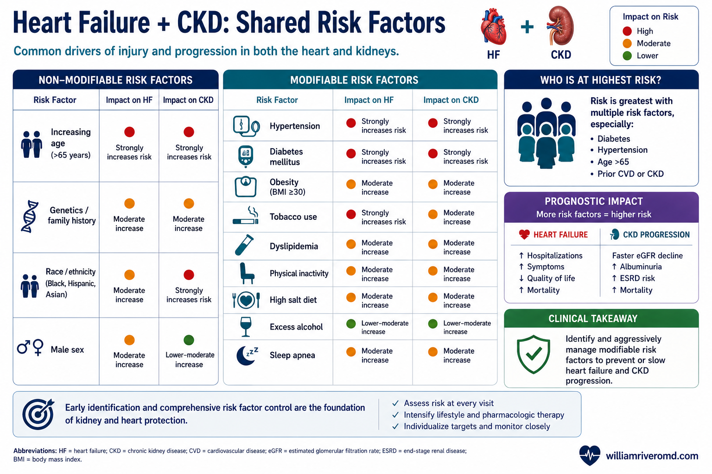
Graded, independent risk: lower eGFR and higher albuminuria each predict incident HF and worse outcomes; UACR rivals BNP for predicting (re)hospitalisation.
- eGFR
- Estimated glomerular filtration rate
- UACR
- Urine albumin-to-creatinine ratio
- HF
- Heart failure
- CV
- Cardiovascular
- BNP
- B-type natriuretic peptide
HF and CKD are bidirectionally and gradedly associated. Roughly 30–60% of patients with HF have CKD, and 10–30% of patients with CKD have HF; risk of each rises with severity of the other. The combined phenotype carries markedly higher risks of hospitalisation, disease progression, and death.
- Lower eGFR is a strong, consistent predictor of adverse outcomes in both HFrEF and HFpEF.
- Albuminuria independently predicts incident HFpEF and worse outcomes in prevalent HF; UACR adds incremental value to risk models and has predictive value for (re)hospitalisation comparable to BNP.
- Trial-level eGFR decline in HF is roughly 1.5–2.3 mL/min/1.73m²/yr; albuminuria changes are generally small. Decline rates are broadly similar between HFpEF and HFrEF (some data suggest faster loss in HFpEF).
- Care gap: combined eGFR + UACR testing remains low — in a large US analysis ~80% of at-risk patients lacked guideline-concordant assessment, and only ~20% of those tested had a UACR.
Shared Mechanisms & Haemodynamics
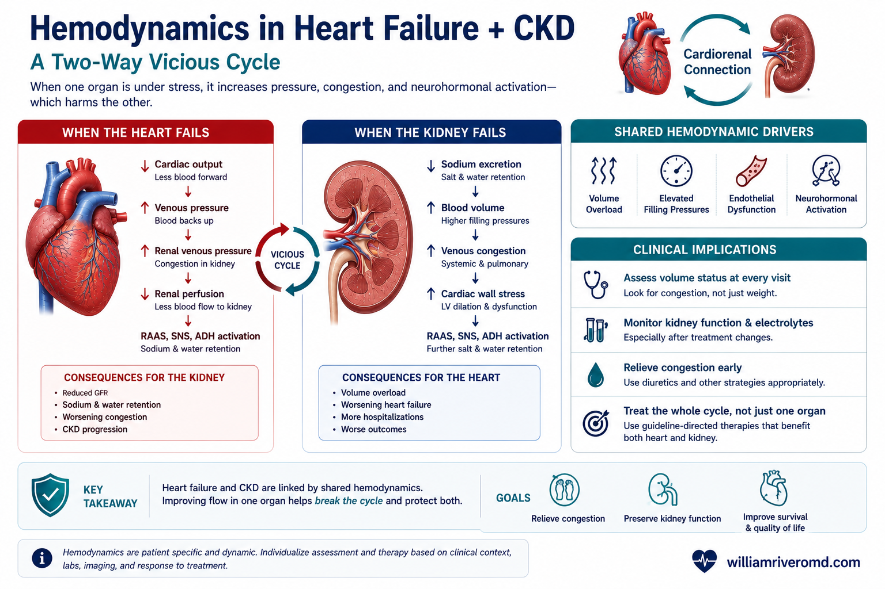
Haemodynamics of cardiorenal GFR decline: ↓ cardiac output and ↑ central venous pressure reduce net renal perfusion — these dips are often haemodynamic and reversible.
- GFR
- Glomerular filtration rate
- CVP
- Central venous pressure
- CO
- Cardiac output
- RAAS
- Renin–angiotensin–aldosterone system
- SNS
- Sympathetic nervous system
- Na⁺
- Sodium
The temporal HF↔CKD relationship is often indeterminate, with shared comorbidities (obesity, diabetes, hypertension) driving inflammation, endothelial dysfunction, neurohormonal activation, and haemodynamic stress in both organs — the common soil hypothesis. Associations are largely similar across HFrEF/HFpEF, though obesity is more strongly tied to HFpEF.
Haemodynamic drivers of GFR decline
Relative contributions of arterial pressure, cardiac index, and central venous pressure remain incompletely defined. BP explains only a small fraction of creatinine variance. Elevated central venous pressure is a strong correlate of reduced GFR (animal models and some — not all — clinical studies); whether it is causative or a severity marker is unresolved. Reduced cardiac output contributes to renal hypoperfusion.
Tubular health: reduced perfusion triggers efferent vasoconstriction, higher filtration fraction, and increased proximal sodium reabsorption, with nephron-wide upregulation of sodium transporters. Proximal tubular function (e.g. TmP/GFR) may be impaired and linked to hospitalisation/mortality, but tubular-injury biomarkers remain discordant and unvalidated for guiding HF management.
Diagnostic & Biomarker Thresholds in CKD
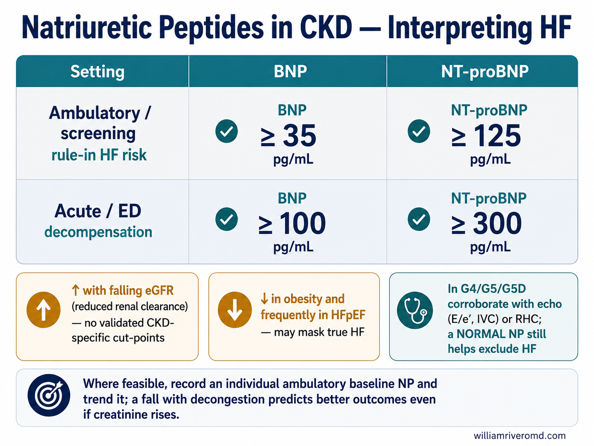
Indication-specific BNP/NT-proBNP cut-points, and why CKD raises (and obesity/HFpEF lower) them — corroborate with imaging and trend an individual baseline.
- BNP
- B-type natriuretic peptide
- NT-proBNP
- N-terminal pro–B-type natriuretic peptide
- CKD
- Chronic kidney disease
- HFpEF
- HF with preserved ejection fraction
- eGFR
- Estimated glomerular filtration rate
- RHC
- Right heart catheterisation
Natriuretic peptides — indication-specific cut-points
| Setting | BNP | NT-proBNP |
|---|---|---|
| Ambulatory / screening (rule-in HF risk) | ≥ 35 pg/mL | ≥ 125 pg/mL |
| Acute / ED (decompensation) | ≥ 100 pg/mL | ≥ 300 pg/mL |
CKD caveats
Natriuretic peptides rise with falling eGFR (reduced clearance) and are lower in obesity and frequently in HFpEF. Standard cut-points are not validated in CKD — no CKD-specific thresholds exist. In G4/G5/G5D, corroborate with objective filling-pressure evidence (echo, RHC). A normal NP remains useful to exclude HF. Where feasible, obtain an individual ambulatory baseline NP and trend it; a fall with decongestion predicts better outcomes even with a concurrent creatinine rise.
Imaging, staging & AKI
- Echo: E/e′, IVC, and filling-pressure estimates aid attribution; LVH (left ventricular hypertrophy) is non-specific in advanced CKD. In HD (hemodialysis) patients, image on non-dialysis days. RHC clarifies volume status/cardiogenic shock when non-invasive assessment is ambiguous.
- Staging: include eGFR <60 or UACR >30 mg/g as HF Stage A (proposed). Use AHA PREVENT (incorporates eGFR; UACR/HbA1c as add-ons) — see the PREVENT calculator.
- AKI (acute kidney injury) definitions may not apply in HF: dynamic creatinine from volume/BP/GDMT changes often does not represent an adverse phenotype; worsening renal function during effective decongestion is not independently associated with worse outcomes.
GDMT Across the eGFR Spectrum
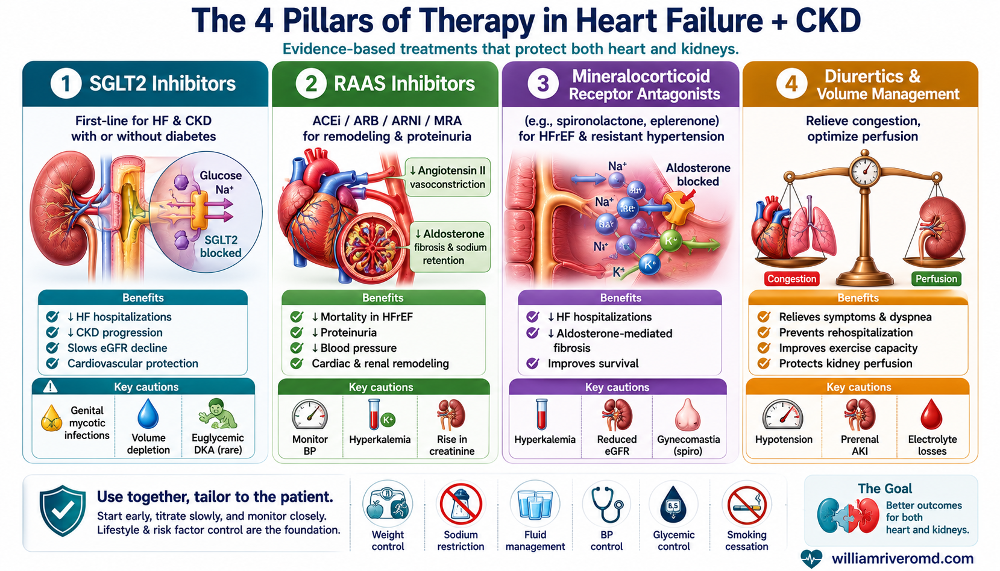
The four drug-class pillars — SGLT2i, RAAS inhibitors, MRAs, and diuretics — with mechanisms, benefits, and the key cautions for each.
- SGLT2i
- Sodium–glucose cotransporter-2 inhibitor
- RAAS
- Renin–angiotensin–aldosterone system
- ACEi / ARB
- ACE inhibitor / angiotensin receptor blocker
- MRA
- Mineralocorticoid receptor antagonist
- AKI
- Acute kidney injury
- DKA
- Diabetic ketoacidosis
- eGFR
- Estimated glomerular filtration rate
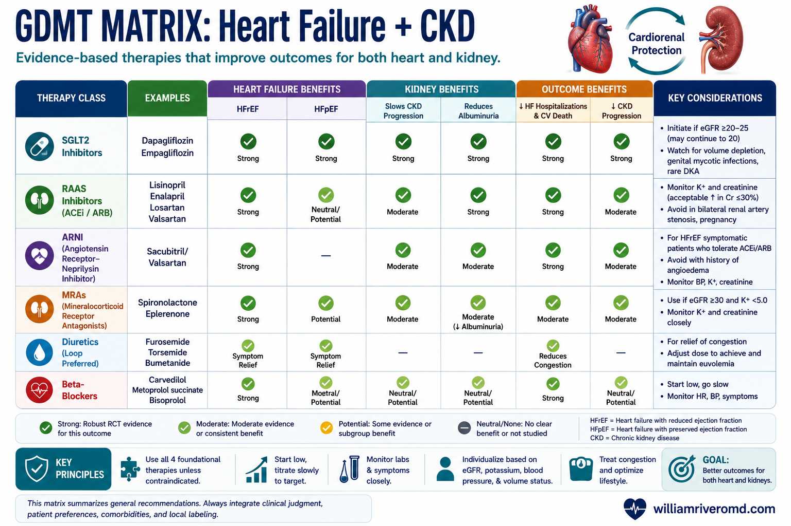
Conceptual framework: agent selection for HFrEF and HFpEF across eGFR bands (after the KDIGO HF & CKD conference).
- HFrEF / HFpEF
- HF with reduced / preserved ejection fraction
- eGFR
- Estimated glomerular filtration rate
- GDMT
- Guideline-directed medical therapy
- ARNI
- Angiotensin receptor–neprilysin inhibitor
- ACEi / ARB
- ACE inhibitor / angiotensin receptor blocker
- SGLT2i
- Sodium–glucose cotransporter-2 inhibitor
- sMRA / nsMRA
- Steroidal / non-steroidal MRA
- K⁺
- Potassium
Thresholds for initiating guideline-directed therapy (adapted from the KDIGO 2024 CKD guideline, 2021 ESC HF guideline + 2023 update, and the 2024 KDIGO HF&CKD conference):
| Therapy | Eligibility by kidney function | Notes |
|---|---|---|
| SGLT2i | Initiate at eGFR > 20; continue below if already started | Mitigates hyperkalaemia of RAASi/MRA; expect early eGFR dip |
| ACEi / ARB | Continue even as eGFR falls <30; stop only if creatinine ↑ >50%, eGFR <25, or hyperkalaemia | Serum K⁺ and eGFR monitoring |
| ARNI | eGFR > 30 (reduced starting dose if <30) | Never combine with ACEi/ARB; slower eGFR decline but possible modest UACR rise vs ACEi/ARB |
| Finerenone (nsMRA) | T2D, eGFR ≥ 25, UACR ≥ 30 mg/g, K⁺ ≤ 5.0 | Preferred over steroidal MRA (less hyperkalaemia); FINEARTS-HF extends benefit to LVEF ≥40% |
| GLP-1 RA | Glycaemic indication down to eGFR 15; renal/CV benefit in T2D + CKD | Especially HFpEF + obesity |
| Steroidal MRA | eGFR > 30 / creatinine < 2.5 mg/dL | Higher hyperkalaemia risk; nsMRA preferred in CKD |
| β-blocker | Any eGFR (HFrEF) | — |
| Loop diuretic | Any eGFR if volume-expanded (higher doses at low eGFR) | Symptom control; no survival benefit |
The eGFR “dip”
Haemodynamic eGFR reductions of up to ~30% on SGLT2i, RAASi/ARNI, or MRA are expected and should not prompt discontinuation; investigate alternative causes if >30%, progressive, or accompanied by hyperkalaemia/volume depletion. Target symptoms, volume, and haemodynamics — not the creatinine value. ESC: continue RAAS agents unless creatinine rises >50% (and creatinine <3 mg/dL, eGFR >25, no hyperkalaemia).
Hyperkalaemia mitigation (to preserve RAASi/MRA)
Concomitant SGLT2i; potassium binders; correction of metabolic acidosis; dietary potassium moderation; loop diuretics; review of interacting drugs. In G5D the efficacy/safety of GDMT remain a genuine evidence gap.
Decongestion & Diuretic Strategy
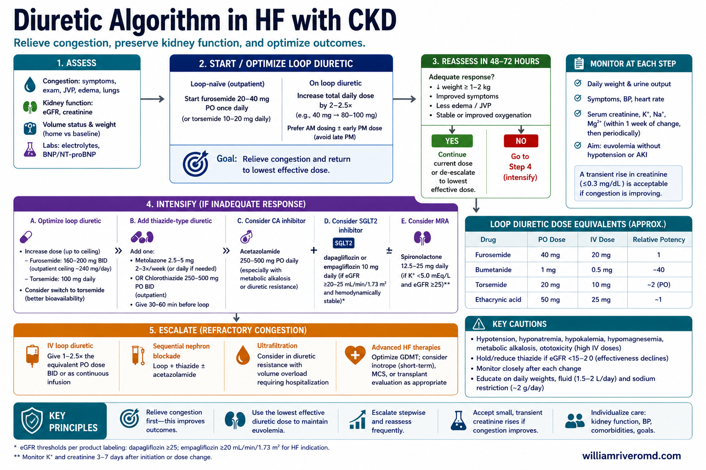
Decongestion algorithm: dose to response targets (spot urine Na, urine output, weight), escalate with sequential nephron blockade, then ultrafiltration/PD (peritoneal dialysis) if refractory.
- eGFR
- Estimated glomerular filtration rate
- UACR
- Urine albumin-to-creatinine ratio
- IV
- Intravenous
- UO
- Urine output
- Na⁺
- Sodium
- GDMT
- Guideline-directed medical therapy
- UF
- Ultrafiltration
- PD
- Peritoneal dialysis
Goal: euvolemia with relief of symptoms and reduced rehospitalisation/mortality. Loop/thiazide diuretics confer no survival benefit — minimise their chronic use and prioritise disease-modifying therapy (ARNI, SGLT2i). Persistent congestion at discharge predicts readmission and death.
Process-based response targets
| Time after IV loop dose | Target |
|---|---|
| 1–2 h | Spot urine sodium > 50–70 mEq/L |
| 6 h | Urine output > 100–150 mL/h |
| 24 h | Weight reduction 1–3 kg |
- Low eGFR / high UACR → higher likelihood of diuretic resistance: initial IV dose ≥ 2.5× the oral home dose; consider torsemide/bumetanide.
- Inadequate response → double the loop dose; add sequential nephron blockade early (thiazide/metolazone — CLOROTIC; acetazolamide — ADVOR; SGLT2i).
- Refractory overload → ultrafiltration (CARRESS-HF showed no benefit and greater creatinine rise vs stepped pharmacologic care) or peritoneal dialysis (steady ultrafiltration, no vascular access, preserved residual function) for chronic management.
- Resume/initiate GDMT once steady-state kidney function and euvolemia are achieved.
Key Trials & the Kidney-Outcome Discordance
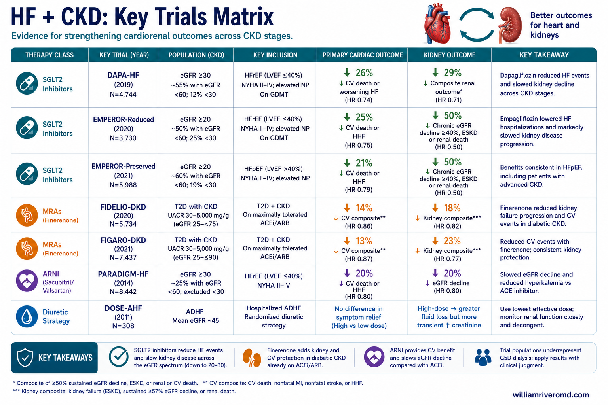
Practice-changing trials — and why kidney-protective drugs underperform on traditional kidney endpoints in HF trials.
- HF / CKD
- Heart failure / chronic kidney disease
- EF
- Ejection fraction
- CV
- Cardiovascular
- MACE
- Major adverse cardiovascular events
- HFmrEF / HFpEF
- HF with mildly reduced / preserved EF
- KCCQ
- Kansas City Cardiomyopathy Questionnaire
- T2D
- Type 2 diabetes
| Trial(s) | Population | Signal |
|---|---|---|
| DAPA-HF, DELIVER, EMPEROR-Reduced/Preserved | HF across the EF spectrum | HR ≈ 0.75 for CV death / HF hospitalisation; benefit consistent regardless of EF or diabetes |
| FINEARTS-HF | HF, LVEF ≥ 40% | ↓ total worsening-HF events + CV death; first MRA with benefit in HFmrEF/HFpEF |
| FLOW | T2D + CKD | 24% ↓ major kidney events; 18% ↓ MACE; 20% ↓ all-cause death |
| STEP-HFpEF | HFpEF + obesity | ↑ KCCQ, exercise capacity, weight loss with semaglutide 2.4 mg |
| FIDELIO/FIGARO (FIDELITY) | T2D + CKD | ↓ kidney progression and CV events with finerenone |
Why kidney-protective drugs underperform on kidney endpoints in HF trials
Therapies with proven kidney protection in dedicated CKD trials have not consistently shown traditional kidney-outcome benefit in HF trials. Likely reasons: lower baseline CKD-progression risk in unselected (non-albuminuric) HF populations, limitations of eGFR fluctuation as a surrogate, competing risks of death/worsening HF, and HF-trial follow-up (~1.5–2.5 yr) too short to capture slow kidney endpoints.
Advanced Disease, Iron & Research Priorities
- Advanced CKD (G4–G5, G5D): systematically excluded from major RCTs (randomized controlled trials) — optimal GDMT and decongestion strategies remain evidence gaps requiring individualisation.
- Iron: oral iron is largely ineffective in HF/CKD; IV iron improves symptoms/functional capacity in iron-deficient HFrEF (AFFIRM-AHF, IRONMAN), though recent trials were neutral on hard composite endpoints (HEART-FID). Assess TSAT/ferritin.
- Sodium: strict restriction (≈1.5–2.5 g/day) has not reliably reduced mortality/hospitalisation (SODIUM-HF) and may harm some; a moderate approach for quality of life is reasonable.
- Exercise: Class 1 (HF) / 1D (KDIGO CKD) recommendations for moderate activity in all who are able.
- Research priorities: enrol advanced CKD; CKD-specific HF diagnostic thresholds; refined AKI definitions in HF; composite endpoints integrating both cardiac and kidney events; eGFR slope; validated PROMs (e.g. KCCQ).
W Rivero, MD, FPCP, DPSN
Specialist in Internal Medicine and Nephrology with a focus on cardio-renal and metabolic care. Practicing evidence-based, integrated nephrology across Quezon City, Pampanga, and Bulacan.Espesyalista sa Panloob na Medisina at Nefrolohiya na nakatuon sa cardio-renal at metabolikong pangangalaga. Nagpapraktis ng ebidensya-batay at pinag-isang nefrolohiya sa Quezon City, Pampanga, at Bulacan.Espesyalista sa Internal nga Medisina ug Nefrolohiya nga nagpunting sa cardio-renal ug metaboliko nga pag-atiman. Nagpraktis og ebidensya-base ug hiniusa nga nefrolohiya sa Quezon City, Pampanga, ug Bulacan.Espesyalista king Panloob na Medisina at Nefrolohiya a nakatutuk king cardio-renal at metaboliko a pamanatiman. Nagpapraktis ning ebidensya-base at mipisanmetung a nefrolohiya king Quezon City, Pampanga, at Bulacan.

Scan and saveI-scan at i-saveI-scan ug i-saveI-scan at i-save